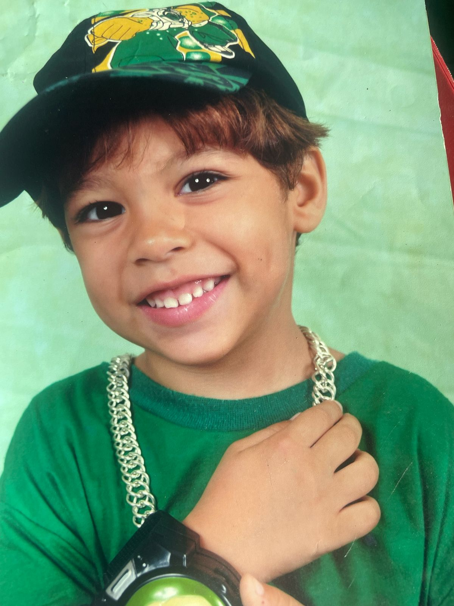
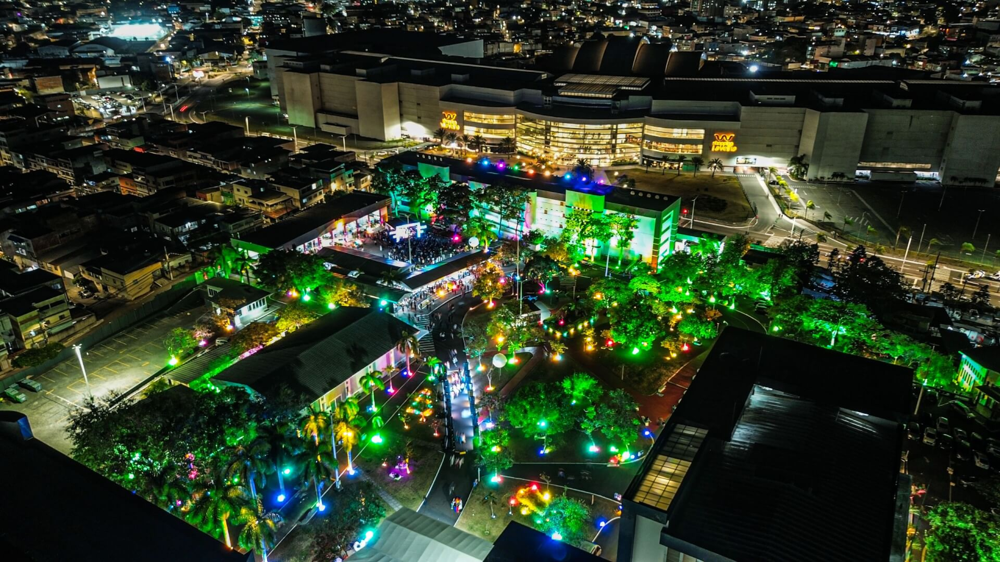

Sempre fui muito chegado a tecnologia, nunca gostei de sair nem de fazer coisas foras, desde pequeno sempre estive inteirado no meio tecnológico, sempre ''me virei'' pra resolver as coisas, os problemas com o que tinha na mão, creio que isso me inclinou pra seguir no curso de Sistemas. Desejo ser um dev fullstack e se tudo der certo trabalhar para fora do país, podendo dar uma condição melhor e digna para minha família.
Consigo atualmente fazer LandingPages, em breve sites completos, tenho um conhecimento sobre musculação, inglês intermediario.
| Música | Time | Esporte | Jogo | Serie/Filme |
|---|---|---|---|---|
| Como havia dito, ouço bastante mpb, Jorge ben é um dos meus favoritos. | Assim como do meu pai, corinthians é meu time de coração. | Mesmo que nao ande muito, skate ainda sim é meu esporte favorito. | Creio que infelizmente é meu hobby favorito, jogar valorant sempre que tenho um tempo livre. | E pra mim a melhor série/anime já feito. |
Fiz meu fundamental completo na escola Leonel Brizola, em Vila Velha. Já o Ensino Médio, fiz um terço do primeiro ano letivo no Florentino Avidos, próximo ao Ibes, e o resto do primeiro, no Godofredo Schneider, junto ao segundo e terceiro ano também. Pro futuro desejo trabalhar pra fora do país, ou em uma boa empresa na área, desejo ser dev fullstack ou focado em backend.
Últimas notícias do InovaWeek que aconteceu em 2025 na uvv aqui: INOVAWEEK UVV
Nunca participei de nenhum evento, semrpe preferi ficar em casa e perguntar como foi depois, mas após entrar
na UVV, me criou uma vontade imensa de participar do InovaWeek, creio que será meu primeiro e estou muito
ansioso pra participar tanto vendo, quanto lançando projetos.

| Matérias UVV | ||||
|---|---|---|---|---|
| Construção de Software para Web | Design e Desenvolvimento de Banco de Dados I | Experiência e Interface com o Usuário | Lógica para Computação | Fundamentos de Tecnologia da Computação |
| Em Construção de Software para Web é o desenvolvimento de sites e sistemas que funcionam na internet, utilizando tecnologias de front-end (HTML, CSS e JavaScript) para a interface do usuário, back-end para a lógica do sistema e banco de dados para armazenar informações. O objetivo é criar aplicações web funcionais, interativas e acessíveis através do navegador. | Em Design e Desenvolvimentro de Banco de Dados I estudamos a modelagem, criação e manipulação de bancos de dados, incluindo modelo conceitual, lógico e físico, além de consultas utilizando SQL. | Em Experiência e Interface com o Usuário estudamos a criação de interfaces intuitivas e agradáveis, focando na usabilidade, acessibilidade e na melhor experiência para o usuário utilizando UX/UI. | Em Lógica para Computação estudamos raciocínio lógico aplicado à programação, incluindo algoritmos, proposições lógicas e resolução de problemas computacionais. | Em Fundamentos de Tecnologia da Computação estudamos a introdução aos conceitos básicos da computação, como hardware, software, sistemas operacionais, redes e funcionamento geral dos computadores. |